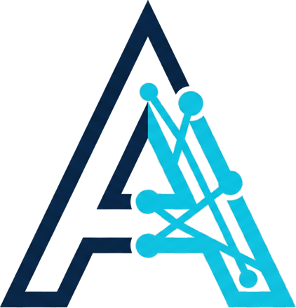
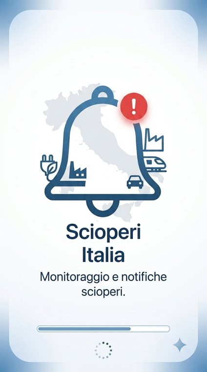

Ottieni di più dai tuoi asset fisici.
APORT Solutions aiuta le organizzazioni a gestire meglio i propri asset, con l’implementazione di IBM Maximo e la consulenza ISO 55001. Sviluppiamo anche app mobile mirate che risolvono problemi concreti.
NOVITÀScioperi — la nostra app per scioperi e interruzioni in Italia→
Prima l’asset management. Il software dove serve.
Implementazione e Supporto Maximo
Implementazione completa di IBM Maximo Manage, su misura per come funziona davvero la tua operatività.
- Configurazione e integration framework
- Automation scripting
- Supporto continuo
Assessment e Consulenza ISO 55001
Gap assessment e consulenza pratica per allineare il tuo approccio all’asset management allo standard ISO 55001.
- Gap assessment
- Roadmap operativa
Sviluppo App Mobile
App mobile mirate, pensate per risolvere un problema specifico, inclusa la nostra Scioperi, ora su iOS e Android.
Scioperi: sappi in anticipo, prima dell’interruzione.
Scioperi e interruzioni di servizio nei trasporti e nei servizi pubblici italiani in un’unica vista semplice, con avvisi prima che l’interruzione si verifichi. Realizzata da APORT Solutions.
- Scioperi e interruzioni in tutta Italia, in un’unica vista
- Trasporti, servizi pubblici e altro
- Avvisi prima dell’interruzione, senza account
Scioperi oggi e domani →

Consulenza indipendente di asset management.
APORT Solutions Ltd è una società di consulenza registrata nel Regno Unito, guidata da Adriano Portaro, che aiuta le organizzazioni a gestire meglio i propri asset fisici — con implementazione Maximo, allineamento ISO 55001 e software su misura.